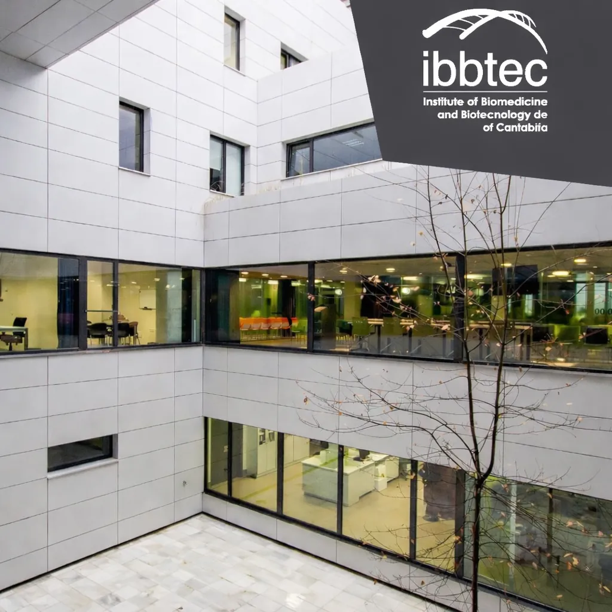

Welcome to the Biomolecular Analysis and Characterization group
We work at the interface of analytical chemistry and molecular biochemistry, developing quantitative methods and functional materials to advance quantitative proteomics workflows and environmental biomolecule characterization.
Research
From analytical measurement to a deeper understanding of biomolecular complexity
We investigate proteins and proteoforms using quantitative analytical approaches, biochemical characterization and functional nanomaterials. Our goal is to develop new biochemical methods and analytical tools that improve quantitative biomolecular analysis. In particular, we make protein digestion and PTM enrichment more efficient and selective, enhancing the characterization and quantification of proteins and proteoforms in complex biological systems.
Proteolysis
We explore functional nanomaterials as proteolytic tools for protein digestion and peptide generation, opening alternative routes for proteomics workflows.
Why it mattersQuantitative proteomics often relies on relative rather than truly absolute measurements. Protein digestion is one of the key steps limiting quantitative accuracy, as conventional enzymatic digestion is intrinsically sensitive to protein structure, the surrounding environment, and reaction conditions, often resulting in incomplete cleavage and biased peptide recovery. Faster, more reproducible digestion improves the coverage and reliability of proteomic analyses.
Selective enrichment of PTMs
We investigate selective enrichment strategies for phosphopeptides, combining functional materials and analytical workflows to improve the analysis of phosphorylation patterns.
Why it mattersPost-translational modifications (PTMs), such as phosphorylation, play essential roles in regulating biological processes and represent important analytical targets in proteomics. Many chemically modified proteins and peptides are present at low abundance, while PTMs often occur substoichiometrically, meaning that only a small fraction of the protein population is modified at a given time. Selective enrichment strategies prior to mass spectrometric analysis are therefore essential to improve the detection and coverage of modified species.
Environmental chelators
Bacteria and plants produce metal chelators to scavenge essential metals and minerals from their environment. We develop new strategies to characterize these compounds.
Why it mattersKnowing how organisms capture metals helps us understand nutrient availability in soils, plant and microbial health, and the fate of metals in the environment.
Funding
Publications
A selection of our recent work. Full list is available on Google Scholar.
Team
Past members
News
Updates from the group: papers, open positions, awards and outreach.
Contact
We are always happy to hear from prospective students, postdocs and collaborators.
We are also open to hosting Erasmus+, Bachelor’s and Master’s thesis students (TFG/TFM).
Tell us about your interests and we will find a project that fits.
Join the group
If you are interested in our research, send us a short message including:
- A brief introduction and your background
- Your CV
- The topics you would like to work on
Get in touch
Emailcalderonf@unican.es
AddressInstituto de Biomedicina y Biotecnología de Cantabria (IBBTEC)
C/ Albert Einstein 22 (PCTCAN)
39011 Santander, Spain

Photo of the building(add images/building.jpg)'">